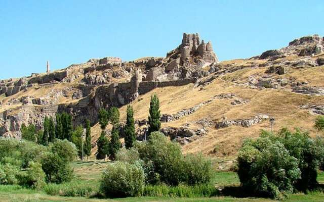
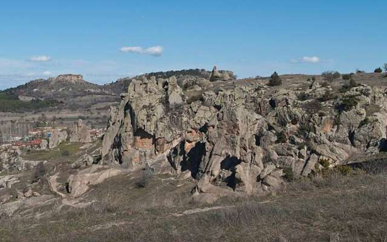

Göbeklitepe and the Stone Hills
The Stone Hills (Taş Tepeler) around Şanlıurfa are a group of Neolithic settlements that make us rethink how humans settled down.

Anatolia's first villages: Aşıklı Höyük and Çatalhöyük
Central Anatolia offers some of the world's best-known examples of the shift from hunting and gathering to farming.

The Hittites and the Neo-Hittite kingdoms
Stretching from central Anatolia to Syria, the Hittite kingdom was one of the great powers of the ancient Near East.

The Urartians
Spreading from Lake Van across eastern Anatolia, the Kingdom of Urartu is known for its fortresses, water engineering and bronze work.

Phrygians and Lydians
Two great kingdoms of post-Hittite Anatolia: King Midas's Phrygia and Lydia, which struck the first coins.

Lycia
On the Teke Peninsula, where mountains meet the sea, lived the Lycians, known for their rock-cut tombs and a league of their own.

Caria
Reaching from Bodrum into inland Muğla, Caria is home to the Mausoleum, one of the Seven Wonders of the ancient world.

Ionia and the ancient cities of the Aegean
With cities like Ephesus, Miletus and Priene, Ionia was one of the birthplaces of philosophy, science and town planning.

Troy and Pergamon
A journey through the northern Aegean, from the Troy of legend to Pergamon, one of the most brilliant kingdoms of the Hellenistic world.

The Kingdom of Commagene
The small but ambitious Kingdom of Commagene on the Euphrates tried to unite East and West, even in its gods.

Anatolia in the Roman period
With theatres, colonnaded streets and aqueducts, Rome turned Anatolia into one of the richest provinces of its world.

Byzantium and early Christianity
From Constantinople to Cappadocia and from Trabzon to Cyprus, the Byzantine legacy of churches, mosaics and monasteries is found all over Anatolia.

Cappadocia: fairy chimneys, rock churches and underground cities
In Cappadocia, shaped by volcanoes and wind, people carved their lives into the soft rock for thousands of years.

The Seljuks and the Beyliks
Settling in Anatolia after Manzikert, the Turks made Konya their capital and built a new culture of caravanserais, madrasas and tile art.

The Ottoman Empire
Born as a small principality in Söğüt, the Ottoman state grew into an empire spanning three continents and more than six centuries.

The layers of Cyprus: from the Bronze Age to the Ottomans
In the north of Cyprus, at the crossroads of the eastern Mediterranean, four thousand years of history unfold, from the copper trade to Gothic cathedrals.

From Gallipoli to the Republic
The years from the Gallipoli campaign to the War of Independence and the founding of the Republic live on in museums and houses across Anatolia.